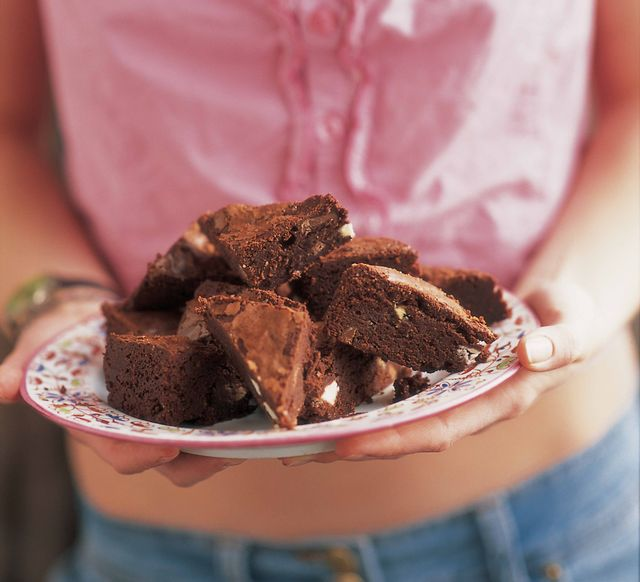

Home
Brownie Recipe

These brownies are rich and delicious and easy to make.
Ingredients
- 1/2 cup butter
- 1 cup white sugar
- 2 eggs
- 1 teaspoon vanilla extract
- 1/3 cup unsweetened cocoa powder
- 1/2 cup all-purpose flour
- 1/4 teaspoon salt
- 1/4 teaspoon baking powder
Instructions
- Preheat oven to 350 degrees F (175 degrees C). Grease and flour an 8-inch square pan.
- In a large saucepan, melt 1/2 cup butter. Remove from heat, and stir in sugar, eggs, and 1 teaspoon vanilla. Beat in 1/3 cup cocoa, 1/2 cup flour, salt, and baking powder. Spread batter into prepared pan.
- Bake in preheated oven for 25 to 30 minutes. Do not overcook.